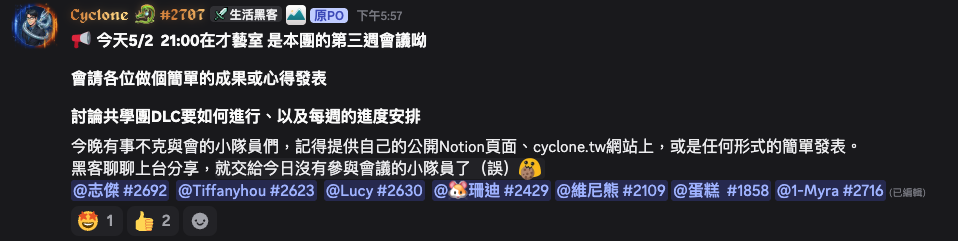
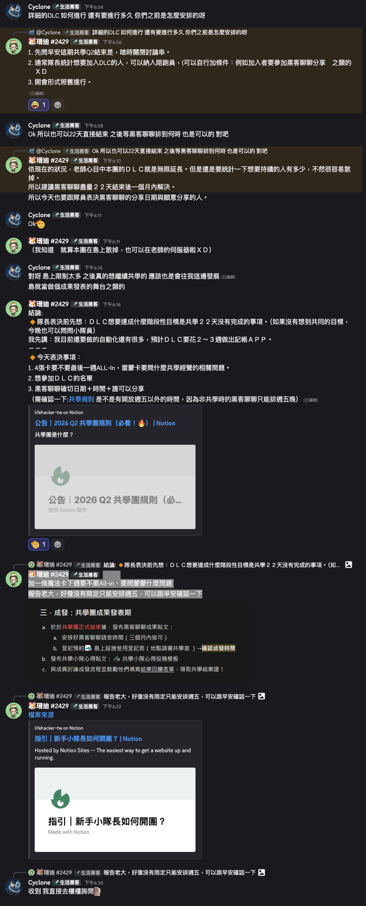

5/2 共學團作戰會議
成果發表 × 魔法卡 × DLC
今晚 21:00｜才藝室｜把 22 天共學收斂成下一階段行動
成果與心得雷蒙教練卡DLC 延伸共學黑客聊聊
今晚 21:00｜才藝室｜把 22 天共學收斂成下一階段行動
每個人至少留下「目前成果、卡點、下一步」三件事，沒有到場也要用連結或文字補上。
Notion、cyclone.tw、GitHub Pages、截圖、影片、文字紀錄都可以。
用 1–2 句說明 22 天中真正做出來的東西，不需要包裝成完美作品。
指出想在 DLC 或成發前補完的最小可交付版本。
目前只有雷蒙教練卡已經使用。今晚需要回顧它帶來的問題、回饋或行動建議。
其餘卡尚未使用。今晚要決定是否最後一週 All-in，或保留到 DLC / 黑客聊聊前使用。
註：Notion 連結目前無法由工具抽出完整頁面內容，所以這版先以你提供的「已用雷蒙教練卡、其他未用」為準。
把雷蒙教練卡提出的問題或提醒，整理成 1–3 個核心句。
它是否讓團隊調整目標、節奏、公開發表方式或陪跑方式？
雷蒙卡的結果要接到 DLC 目標、魔法卡 All-in，或黑客聊聊分享。
建議：可以 All-in，但每張卡都要綁一個明確輸出。
DLC 不是「無限延長共學」，而是補完 22 天內沒有完成、但值得繼續完成的階段性目標。
每位成員要說出一個 DLC 想完成的具體任務。
建議 2–3 週或到黑客聊聊前，不要沒有終點。
每週用公開連結、截圖、demo 或文字紀錄驗收進度。
確認是否可安排週五以外；若規則不確定，會後向早安確認。
至少先列出願意分享的人，並確認每人分享主題。
公開頁面、心得貼文、成果截圖、Demo 頁面、DLC 最終作品。
主持人可會後直接複製這頁，補上實際決議後貼到討論串。
今晚 21:00 在才藝室，請各位做簡單成果或心得發表；同時討論 DLC 如何進行、每週進度安排。
未能與會者：提供公開 Notion 頁面、cyclone.tw 網站頁面，或任何形式的簡單發表。


成果可見、問題可問、承諾可追、下一步可做。